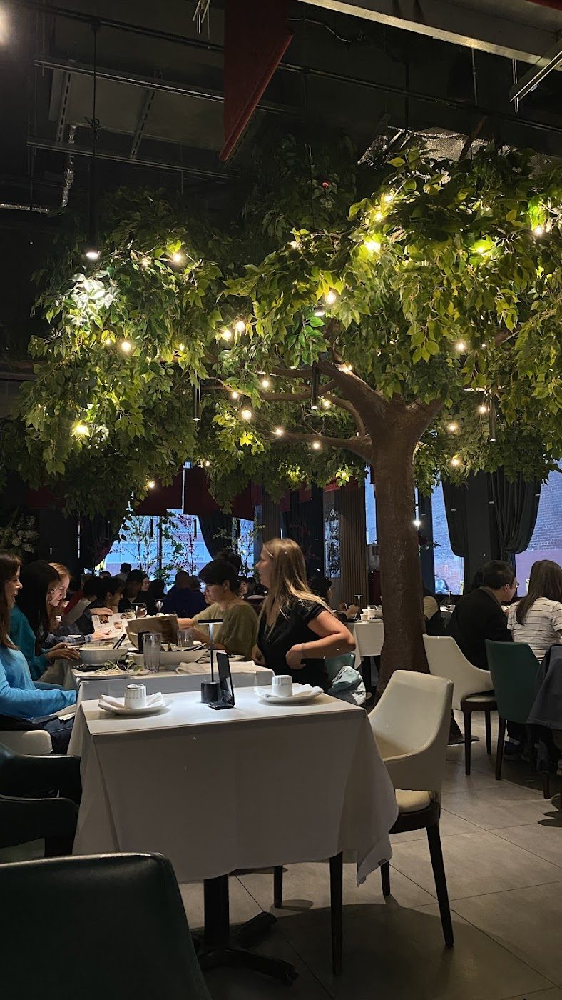

Vietnamese restaurant · Entertainment District · Adelaide St W
Pho, bún bò Huế & a table in the core.
A Vietnamese restaurant on Adelaide Street West, in Toronto’s Entertainment District. Come for a steaming bowl of pho — reviewers keep coming back to the braised beef short rib — or for vermicelli, spring rolls and other dishes meant for sharing.
- Pho, including short-rib pho
- Bún bò Huế
- Vermicelli & spring rolls
- Entertainment District
From the kitchen
Pho
A wide range of pho bowls. Reviewers keep recommending the braised beef short rib pho (Phở Sườn Bò): a large, slow-cooked rib in a rich broth. Angie calls the pho thái “absolute perfection,” and Scott Avery writes that the beef rib pho “was to die for.”
Bún bò Huế
On the menu, and a reason people visit. ILAN BENISTY ordered “bun bo huey soup” with spring rolls and found everything excellent. David Ha enjoyed it too, and notes this version uses phở noodles rather than the traditional round rice vermicelli — he preferred the grilled-pork vermicelli.
Vermicelli, rolls & sharing plates
Vermicelli bowls with grilled pork, chicken and spring rolls come up again and again. Reviewers also mention phở cuốn Hà Nội, nem nướng, papaya salad and a sesame-ball dessert (bánh cam kem). Many dishes are served for sharing.
This list comes from dishes named in Google reviews (read on the listing or copied by the CanadaResto directory) and from photos on the public Google listing. No prices are listed here; one reviewer mentioned a 10% discount when paying cash. Call (437) 836-2764 if you have questions about the menu or a larger group.
On Adelaide Street West
A bowl of pho in the Entertainment District
Open daily · later on Tuesday
Pho Ngoc Yen 3 is the downtown Toronto location of a Mississauga family restaurant, a few blocks from the theatres and offices around King and Adelaide. Reviewers talk about generous bowls, a dressed-up dining room, and staff who check in. It gets busy — especially Friday evenings — so a little extra time, or a call ahead, helps.
“Best pho of my life! Exceptional meal and great vibes”
Andrea Pitelka, Google review, via the CanadaResto directory, 7 Nov 2026.
What customers say
4.7 ★ from 1,327 Google reviews (checked Nov 12, 2026). Quotes are word for word. Each one says where it was read: on the Google listing itself, or on a public page that copies reviews. Google shows only a handful of reviews without signing in, so some quotes are Google reviews copied by the CanadaResto directory.
★★★★★
Our group included one Vietnamese diner, one Briton, and one Canadian, so we had a mix of perspectives around the table.
We waited about 15 minutes for a table, which wasn’t bad considering how busy the restaurant was. Once we were seated, the service was outstanding. Every staff member we interacted with was friendly, attentive, and knowledgeable. Whether we had questions about the menu, wanted to add another dish, or needed advice on the wine selection, someone was always happy to help. We never felt rushed or like we were overstaying our welcome.
As someone relatively new to Vietnamese cuisine, I appreciated how welcoming the experience was. The food was fresh, beautifully prepared, and packed with flavor. While it’s a little on the pricey side, the quality of the ingredients and the care that went into each dish made it worthwhile.
With one Vietnamese guest at our table, it was reassuring to hear that the food met their expectations too. By the end of the meal, all three of us agreed it had been an excellent dining experience. The combination of genuine hospitality and delicious food left such a positive impression that we happily left a generous tip. We’ll definitely be back.
★★★★★
We stopped by Pho Ngoc Yen in downtown Toronto for a cozy Friday evening meal. Known for bringing vibrant, authentic Vietnamese flavors to the city, they definitely delivered on comforting, rich dishes. Super long lineups started forming after 6:30 PM on Friday, so luckily we arrived before 6 PM and got seated right away with no waiting!
What We Ordered:
Pho Cuon Ha Noi: A fantastic fresh starter to kick off the meal—delicate, flavorful Hanoi-style rolled pho noodles packed with fresh herbs and tender beef.
Pho Suon Bo: The star of the table! A rich, deeply aromatic bowl of pho served with a massive beef short rib that practically falls off the bone. Extremely satisfying and full of depth.
Banh Cam Kem: A lovely sweet finish to the meal—crispy sesame balls paired with ice cream, perfectly balancing hot and crisp textures with a smooth, cold finish.
Overall Impression:
The broth here is rich, fragrant, and clear, showing real care in execution. Excellent service and a great spot in the core if you’re craving high-quality Vietnamese cuisine. Also, make sure to take advantage of their 10% cash discount when paying cash!
★★★★★
One of the best Vietnamese cuisine I’ve had in the city! Everything we ordered was delicious and flavourful. The pho thai was absolute perfection!! Clean restaurant, friendly staff, and elegant ambiance. Highly recommend this restaurant! 11/10 hope to return soon! :)
★★★★★
Ordered the spring rolls and bun bo huey soup; everything was excellent. Servers were friendly and attentive. Very reasonably priced for downtown Toronto.
★★★★★
We are from a Southeast Asian country, so we can easily tell good Vietnamese food from bad. I can tell you that this place is really good and authentic, with generous portions at reasonable prices. We had the vermicelli with grilled pork, chicken, and spring rolls, as well as the beef pho and nem nướng—all were fantastic! We were only in Toronto for four nights, but we chose to eat dinner here for two of them. That’s how good it is!
★★★★★
I tried both the vermicelli with grilled pork and the bún bò Huế, and the vermicelli was the clear winner for me! Both dishes were good, but I’d recommend the vermicelli over the bún bò Huế. If you’re looking for a more authentic bowl of bún bò Huế, just note that this version uses phở noodles instead of the traditional round rice vermicelli noodles. Overall, both were enjoyable, but the grilled pork vermicelli is the clear winner.
★★★★★
Best pho of my life! Exceptional meal and great vibes
★★★★★
Place was phenomenal. The layout, the vibe and the beef rib pho was to die for.
From the table
Real photos from Pho Ngoc Yen 3 Toronto’s public Google listing and its customers’ reviews. Tap to enlarge.
Visit Pho Ngoc Yen 3
350 Adelaide St W
Toronto, ON M5V 1R7
Entertainment District
| Monday | 12–10 p.m. |
|---|---|
| Tuesday | 5–10 p.m. |
| Wednesday | 12–10 p.m. |
| Thursday | 12–10 p.m. |
| Friday | 12–10 p.m. |
| Saturday | 11 a.m.–10 p.m. |
| Sunday | 11 a.m.–10 p.m. |
These are the hours on Google today. Tuesday opens later, at 5 p.m. A neon hours sign in the window shows the same daily open and close times. It can get busy at dinner; reviewers mention lineups on Friday evenings.